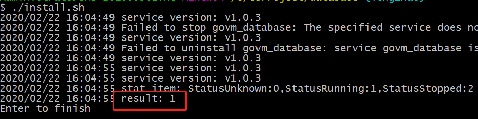
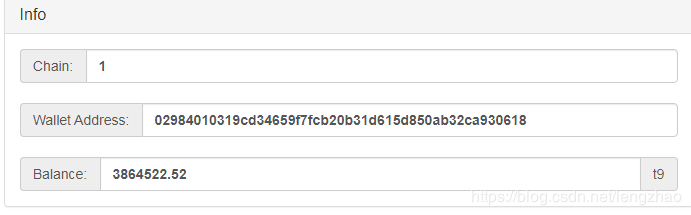
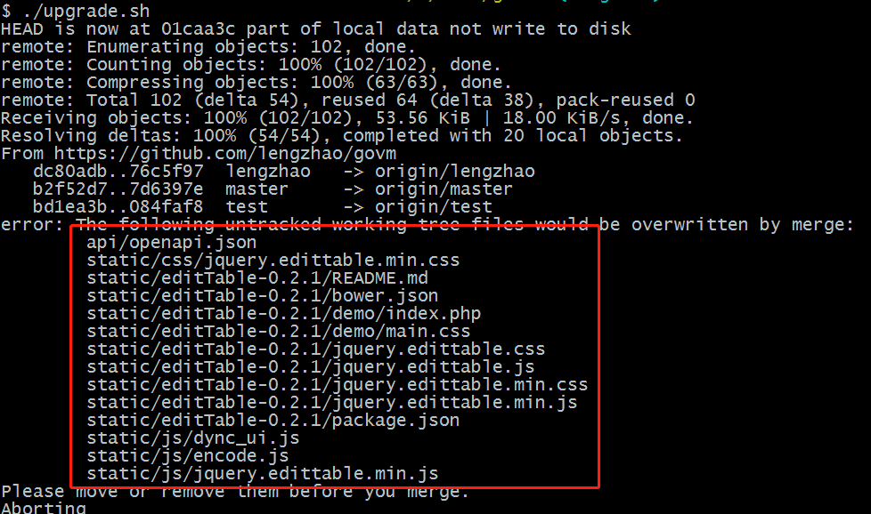

Mine(windows)
- Mine(windows)
Hardware requirements
- Now take windows as an example. Other systems are the same process.
- 64-bit windows system, at least windows7
View: Computer / My Computer-> Right-click-> Properties-> System type: 64-bit operating system
If it is 32-bit, it is not supported. - Larger disk space
blockchain needs to store a large amount of data, so it needs a lot of space, at least 50G
upfront, because there are fewer transactions, and less space is required. There may be 1G of new data in the next day.
If there is a solid state drive ,will be better - Network
Software always needs to be networked, and because it needs to synchronize data with other nodes, if the network is too poor, it will affect mining
Environment setup
golang installation
- Download address:https://golang.org/dl/
- Download go1.13.*.windows-amd64.msi
- Direct installation, all default configuration, no need to modify
Git installation
- Download address: https://git-scm.com/downloads
- Click on windows to download

- After downloading, install directly, all default configuration
- Win10 and win2012 suggest to restart the computer
Download the source code
- Select a disk (requires more free space)
- Create a folder (do not use Chinese, the path is not too long)
- Enter the folder, right-click in the blank space, and select "Git Bash Here"
- Enter and press enter: git clone https://github.com/lengzhao/database.git
- Enter and press enter: git clone https://github.com/lengzhao/govm.git
- Will start downloading the code
- After success, there should be 2 folders, database and govm
- After the code is downloaded, compile the code
First compile the database
cd database/ go build ll database.exeCompile govm:
If you have anti-virus software, please set the folder as trusted, otherwise the app will be cleaned by the anti-virus software. run upgrade.sh or do as follows in bash
cd ../govm/ go build ll govm.exe cp ./conf/conf.bak.json ./conf/conf.jsonthe govm.exe is generated
Use the backed up data
- This step may not be executed. If this step is not performed, data will be synchronized from the beginning, which will take several days
- if already started
- Close govm and database
- run database/uninstall.sh
- remove database/db_dir
- Browser open http://govm.net/dl/
- Download: database_data_v*.tar.gz and govm_app_v*.gz
- After downloading, put the database_data_v*.tar.gz file into the database folder and decompress it to the current file(database folder)
- After the decompression is successful, there will be an db_dir folder in the database folder
- put the govm_app_v*.gz file into the govm folder and decompress it to the current file(govm folder)
- After the decompression is successful, there will be an app folder in the govm folder
- Go to the folder govm-> tools-> rebuild, double click to execute rebuild.sh, the smart contract will be recompiled
Starting
- Register the database as a system service, enter the database folder, double-click install.sh, the anti-virus software may have a risk prompt, you need to allow this operation
 - If it is not successful, you can start the database by double-clicking database.exe
- Start govm, click start.sh, the program will start and show the software version

- You can use a browser to log in to http://localhost:9090
- After the program starts, it will automatically connect to other nodes and start to synchronize data (the synchronization time is related to the network and disk)
- After synchronization is completed, mining will start automatically
- One block per minute, whoever digs, the reward is who it is, so competition is needed. The stronger the computer's computing power, the easier it is to dig
Save wallet file
The wallet.key in the conf folder is the wallet file. Please backup it to save it.
If it is lost, it will be lost forever and the virtual currency will never be found again.
Check
Check if other nodes are connected
- Browser opens http://localhost:9090
- Click on "Node" in the upper right corner
- Confirm that there are multiple nodes in Nodes, as shown below

- If there are no nodes, first check whether the network is normal. If the network is normal, click Submit directly and reconnect.
- Refresh the page and confirm that there are nodes in Nodes
Confirm start syncing blocks
- Browser opens http://localhost:9090
- Click "Block"
- The block time has changed. After the update is completed, the block time will be the same as system time, as shown below.

View your token
- Browser opens http://localhost:9090
- If already open, click Home
- The following message will be displayed
 - "Wallet Address" is your wallet address, this address is used for transfer in and out
- Balance is the balance on the wallet, and the reward for each mining is about 5tc.
How to transfer
- Browser opens http://localhost:9090
- Click Transfer
- Fill in the peer's wallet address in "Peer"
- "Amount" fill in the transfer amount
- Click Submit
The identifying code is enabled by default, you need to enter the identifying code in the govm command line window and press "Enter"

The transfer is not real-time. This transaction needs to be packaged into a block before it officially takes effect.
Token Unit
- Units t0,t3,t6,t9,tc
- The default unit is tc, which is 10 ^ 12 * t0
- t3 = 1000 * t0, t6 = 1000 * t3, t9 = 1000 * t6, tc = 1000 * t9
- The reward of each mining is about 5tc
- The default unit can be changed on the "Setting" page
Update software
Update database
- exit govm.exe
- Enter database folder
- Close the database window(If not exist, ignore)
- Run upgrade.sh
- Start database: run install.sh Or run database.exe
Update govm
- Exit the program, make sure there is no govm.exe process in the task manager, and if so, force the process to end
You can directly run upgrade.sh to upgrade, or perform the following operations to upgrade
- In the govm folder, right-click in the blank space and select "Git Bash Here"
- Enter: git pull
- If the update fails (error), delete the conflicting files according to the prompt, and perform the previous step again. As shown in the figure below, you need to delete the files listed in the red box, and then execute upgrade.sh
After the update is complete, recompile

Click start.sh to start the program
- If an exception occurs, the program will exit directly, otherwise it will continue to run(such as: not run database)
No mine, Why
- The data has not been synchronized. First make sure that the time in the block page is the same as the computer time.
- If the time in the block page has not changed, check whether there is a node in Node. If not, you need to add it manually
- Computer time is wrong, make sure the computer time is the same as universal time
- Computer performance problems, in the early stage, it is easy to dig with ordinary computers. With the increase of nodes, the computing power requirements are getting higher and higher, and ordinary computers are difficult to dig.
Rebuild Smart Contract
- into govm/tools/rebuild/, open Bash
- in bash,run"./rebuild.sh"
- finish rebuild smart contract
show "result,chain: 1
" on success 
Register miner automatically
- If there is no coins in the account, skip this chapter.
- Registered miners will be weighted when calculating block hash power. If they are not registered, it will take more hash power to mine
- Registration does not mean that you can successfully mine. Only when mining, the hash power will add weighting, which is easier to be accepted by other nodes and not easily replaced.
- The configuration is in govm/conf.json, which can be opened with a text editor
- set cost of registered
- It is recommended to set 15tc, the configuration files use t0, so the value should be 15000000000000
- No less than 15tc, configuration 0 means no automatic registration
- Modify the value of cost_of_reg_miner in the configuration file
- More coins have a higher weight, in order to avoid too many people registering and being squeezed out, you can increase the coins
- 15tc is the most cost-effective configuration (if the number of registered people is crowded out, you can increase the amount appropriately)
- You can check the information after successful registration on the "Miner" page
Set the registered serial number (random if not set)
- Automatic registration is registered every 11 blocks (this cannot be changed, it allow more participation)
- There may be many people registering one at the same time, you can choose the registration number
- If it is not in the configuration, you can add a line in the middle.
- It is recommended to set the value to a number from 1 to 11. 0 or not set means random
- Auto-registered transactions will be in the "Send History" on the homepage
modify lucky_number & cost_of_reg_miner
{ "server_host":"ws://0.0.0.0:17778/govm,s2s://0.0.0.0:17778", "http_port":9090, "db_addr_type":"tcp", "db_server_addr": "127.0.0.1:17777", "db_server_port": 17777, "chain_of_mine":0, "energy_of_trans":1000000, "wallet_file":"./conf/wallet.key", "cost_of_reg_miner":15000100000000, "do_mine":false, "save_log":true, "lucky_number":1, "identifying_code":true, "password":"govm_pwd@2019" }
Multi-core mining
- The default govm version only supports single CPU core mining (multi-core will cause conflicts in smart contract processing)
- Here is a dedicated multi-core mining program (need to install and start govm according to the previous tutorial)
- Download the mining program from the official website: http://govm.net/dl/
- File name mining *, choose the latest version to download
- After downloading it, unzip it and put the 3 folders database, govm and mining in parallel. Only mining is new, others are original

- Change parameters(mining/conf/conf.json):
- Set the number of threads: thread_num
- Can not be set to 0, it is recommended to be consistent with the number of CPU cores
- If the computer has other uses, you can set it as needed
- By default, mine all chains. If you only want to mine one chain, you can set chain_of_mine, 0 means all chains, and non-zero means the id of chains, such as 1 or 2.
- After the configuration modification is completed, double-click mining.exe to start the program, the program needs to be open all the time
- If there is an exception, it will exit the program directly
- When abnormal, you can run it with Bash to view the error message
- Open Bash and execute ./mining.exe
If the CPU is not used full, you can modify the configuration and open multiple mining programs
- Modify db_server_addr in mining*/conf/conf.json
- Modify the port, can not conflict with other ports.
Different minings use different ports
"db_addr_type": "tcp", "db_server_addr": "127.0.0.1:12777","db_addr_type": "tcp", "db_server_addr": "127.0.0.1:13777",
More information
contact details: